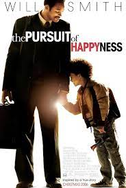

The Pursuit of Happyness
Release date: March 14, 2007
 8/10
8/10
Genres: Drama/ Biography
Life is a struggle for single father Chris Gardner (Will Smith). Evicted from their apartment, he and his young son (Jaden Christopher Syre Smith) find themselves alone with no place to go. Even though Chris eventually lands a job as an intern at a prestigious brokerage firm, the position pays no money. The pair must live in shelters and endure many hardships, but Chris refuses to give in to despair as he struggles to create a better life for himself and his son.